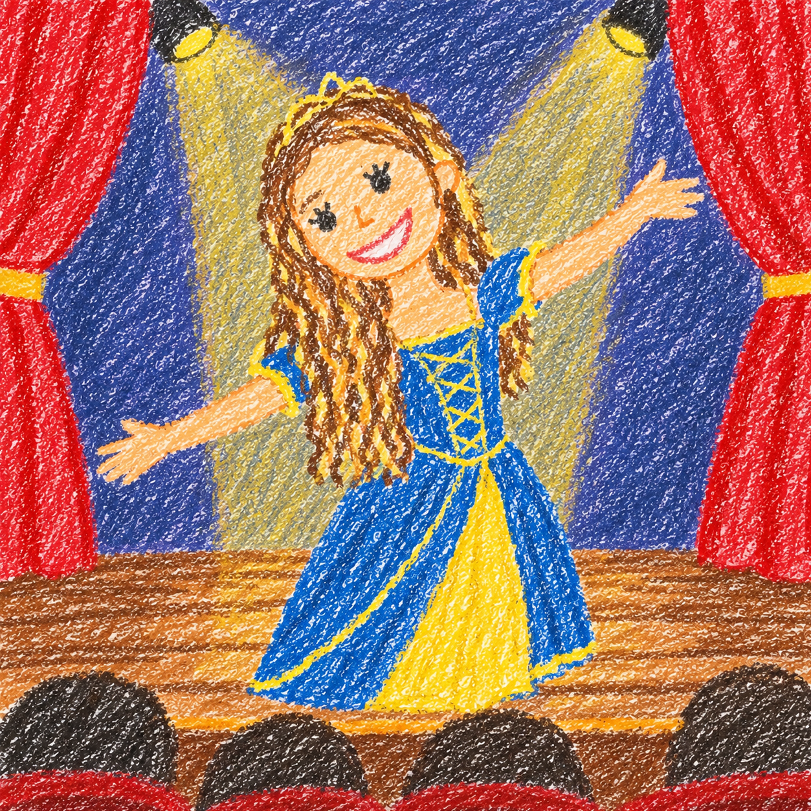

Oi! Eu sou a Julia Barosi, tenho 17 anos e moro em Lorena-SP. Sou estudante do 2º ano do Ensino Médio
e também faço o curso técnico de Desenvolvimento de Sistemas no SENAI, onde estou no 1º ano. 💻✨
Além dos estudos, uma coisa que faz parte da minha vida há bastante tempo é o teatro! 🎭
Faço teatro há 6 anos e gosto muito de me expressar, criar personagens e viver histórias diferentes.
O teatro também me ajudou a perder a vergonha, ter mais confiança e conhecer pessoas incríveis.
Eu sou uma pessoa curiosa, criativa e que gosta de aprender coisas novas. 💙
Gosto de descobrir como as coisas funcionam e também de colocar minhas ideias em prática.
Escolhi Desenvolvimento de Sistemas porque achei muito interessante a possibilidade de criar
coisas usando tecnologia, desde sites até sistemas e aplicativos. 🖥️🌐
Para o meu futuro, tenho o sonho de passar em uma universidade federal para cursar Ciências Biológicas.
Depois, quero me especializar em Biologia Marinha, porque acho incrível o mundo dos oceanos
e quero aprender mais sobre os animais e a vida marinha. 🐠🐋🌊
Quero transformar esse sonho em realidade e, quem sabe, trabalhar ajudando a cuidar e preservar a natureza! 💙✨
